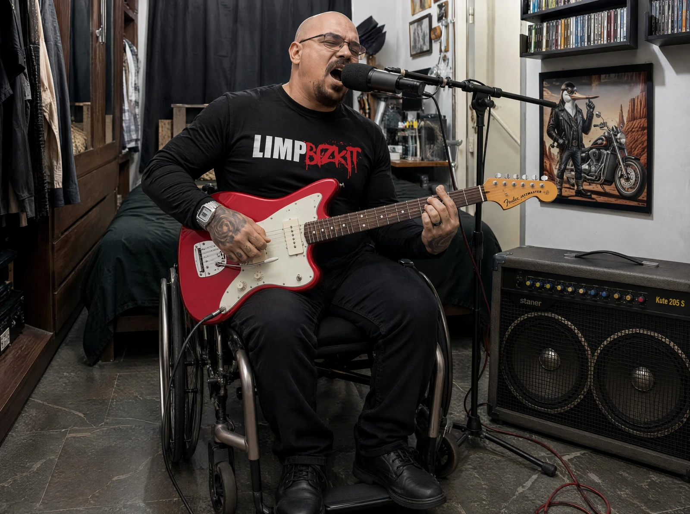
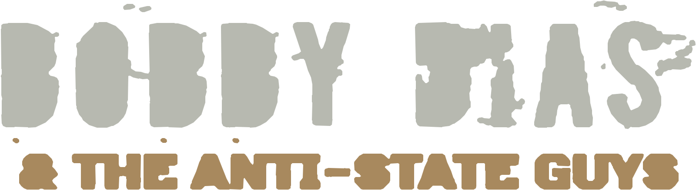
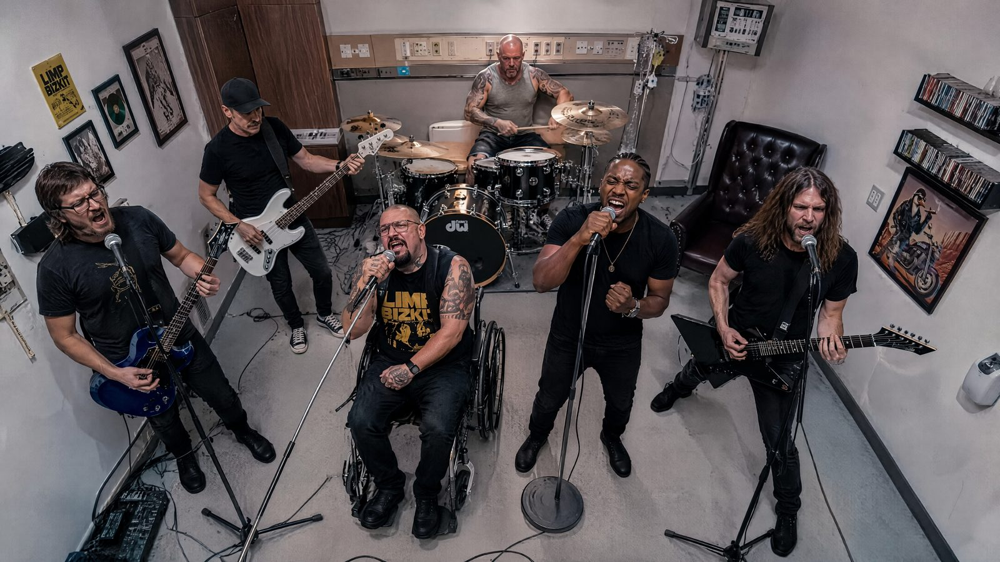
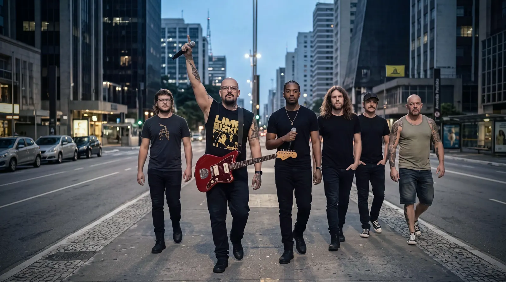
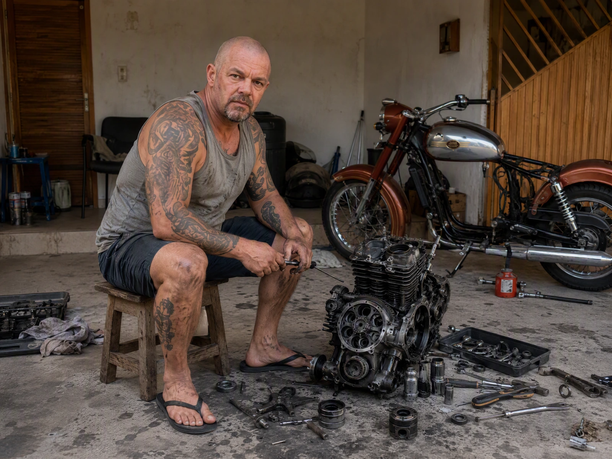
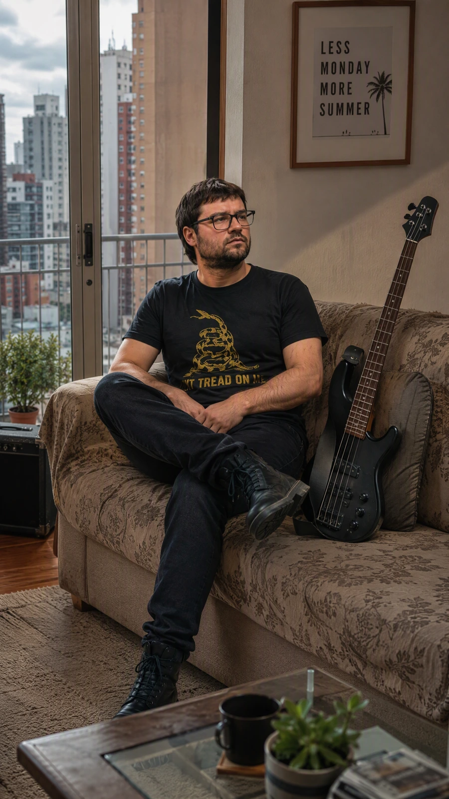
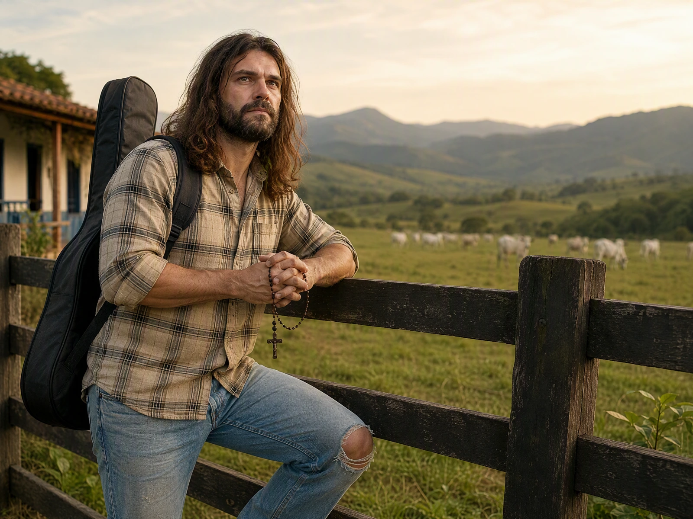
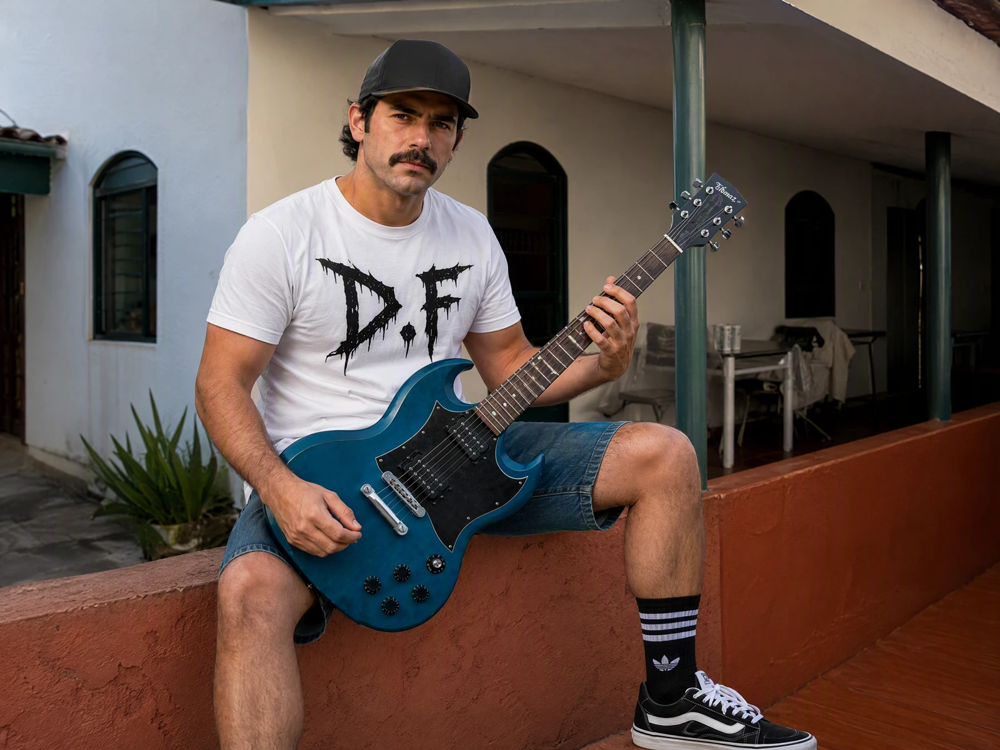

Bobby Dias
Vocal · compositor · multiinstrumentista
Escreve desde a infância e passou por piano, cordas, bateria e diferentes bandas. A entrada no projeto redefiniu repertório, direção musical e o próprio nome da banda.


Em produção. O vídeo oficial entra aqui assim que estiver pronto.
A banda surgiu em Goiânia, em fevereiro de 2025, inicialmente com o nome provisório BreakNews. Break reuniu McFly no baixo, Young na guitarra solo, Thomaz na guitarra base e Santiago dividido entre vocal e DJ.
O repertório era voltado a covers de bandas internacionais. Havia uma única música autoral: “O Forasteiro”, uma demo de home studio doada por Bobby Dias depois de uma longa conversa com Break.
Meses depois, a BreakNews tocou no aniversário de Break. Trechos da apresentação chegaram a Bobby. A execução de “O Forasteiro” o deixou profundamente insatisfeito. Santiago mediou a discussão e chamou Bobby para um ensaio, para que ele explicasse o que havia sido perdido na interpretação.
Durante o ensaio, a condução de Bobby foi bem recebida por todos e veio o convite para liderar o projeto. A mudança trouxe um novo nome, escolhido pela banda em homenagem a ele, e uma nova identidade sonora: Bobby Dias & The Anti-State Guys, com repertório majoritariamente autoral e uma mistura de nu-metal e grunge.
A história segue sendo escrita.


Vocal · compositor · multiinstrumentista
Escreve desde a infância e passou por piano, cordas, bateria e diferentes bandas. A entrada no projeto redefiniu repertório, direção musical e o próprio nome da banda.

Bateria · percussão
Luiz Paulino Santana cresceu entre oficina, ferramentas, motores e rodeio. Autodidata, levou para a bateria a disciplina e o impacto mecânico que sustentam o peso da banda.

Baixo · backing vocal
Bacharel em matemática e baixista, voltou à música depois de quase uma década. É uma das bases de sustentação sonora e humana do grupo.

Guitarra solo · backing vocal
Vindo da cena underground de Goiânia e Inhumas, é responsável pelos arpejos, solos e timbres mais viscerais do grupo.

Guitarra base · backing vocal
O mais jovem da formação traz skate, cultura DIY e uma guitarra rítmica urbana, distorcida e pouco interessada em virtuosismo gratuito.
Vocal · DJ · sonoplastia
Nascido em Kinshasa e criado no Brasil, mistura rap, nu-metal, scratches e sonoplastia. É a ponte entre a banda e sua camada eletrônica.
SHOWS
A banda está neste momento em estúdio, preparando material e se organizando para futuras apresentações.
Quando houver datas confirmadas, elas aparecem aqui.
Outros canais e formas de contato serão publicados aqui conforme forem definidos pela banda.